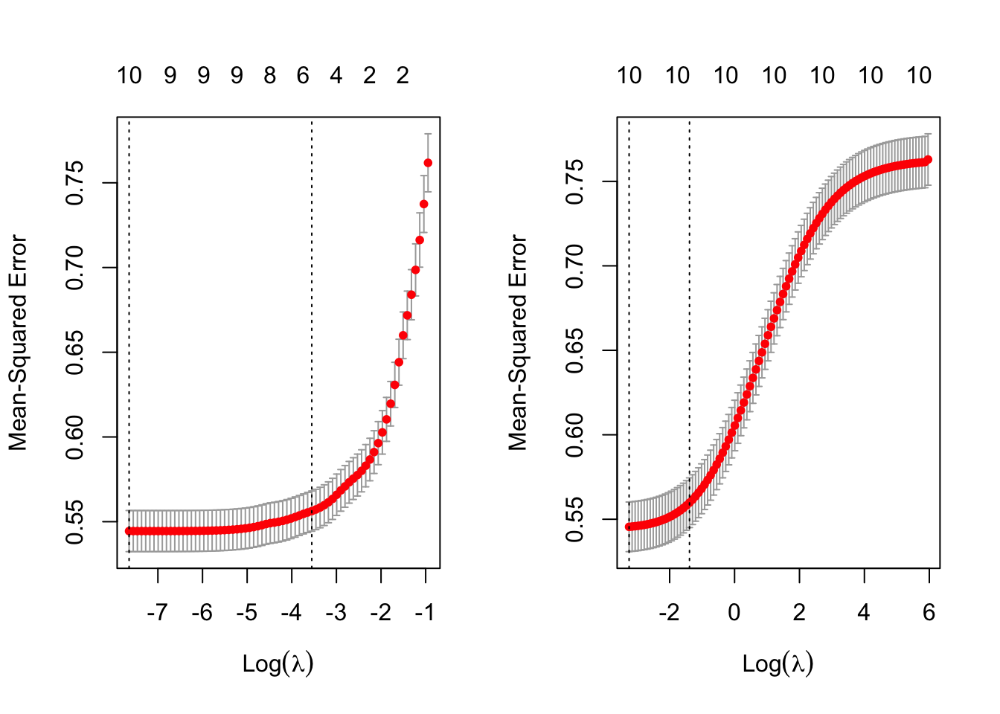

Please read the instructions carefully before submitting your assignment.
This assignment requires you to only upload a PDF file on Canvas
Don’t collapse any code cells before submitting.
Remember to make sure all your code output is rendered properly before uploading your submission.
⚠️ Please add your name to the author information in the frontmatter before submitting your assignment ⚠️
For this assignment, we will be using the Wine Quality dataset from the UCI Machine Learning Repository. The dataset consists of red and white vinho verde wine samples, from the north of Portugal. The goal is to model wine quality based on physicochemical tests
We will be using the following libraries:
library(readr)library(tidyr)library(dplyr)
Attaching package: 'dplyr'
The following objects are masked from 'package:stats':
filter, lag
The following objects are masked from 'package:base':
intersect, setdiff, setequal, union
library(purrr)library(car)
Loading required package: carData
Attaching package: 'car'
The following object is masked from 'package:purrr':
some
The following object is masked from 'package:dplyr':
recode
library(glmnet)
Loading required package: Matrix
Attaching package: 'Matrix'
The following objects are masked from 'package:tidyr':
expand, pack, unpack
Loaded glmnet 4.1-8
library(broom)library(corrplot)
corrplot 0.92 loaded
Question 1
50 points
Regression with categorical covariate and \(t\)-Test
1.1 (5 points)
Read the wine quality datasets from the specified URLs and store them in data frames df1 and df2.
Perform the following tasks to prepare the data frame df for analysis:
Combine the two data frames into a single data frame df, adding a new column called type to indicate whether each row corresponds to white or red wine.
Rename the columns of df to replace spaces with underscores
Remove the columns fixed_acidity and free_sulfur_dioxide
Equivalently, R has a function called t.test() which enables you to perform a two-sample \(t\)-Test without having to compute the pooled variance and difference in means.
Perform a two-sample t-test to compare the quality of white and red wines using the t.test() function with the setting var.equal=TRUE. Store the t-statistic in t2.
Fit a linear regression model to predict quality from type using the lm() function, and extract the \(t\)-statistic for the type coefficient from the model summary. Store this \(t\)-statistic in t3.
fit <-lm(quality ~ type, data = df)summary_coef <-summary(fit)$coefficientst_stat <- summary_coef["typewhite", "t value"] t3 <- t_stat
1.6 (5 points)
Print a vector containing the values of t1, t2, and t3. What can you conclude from this? Why?
c(t1, t2, t3) # Insert your code here
t
-9.68565 -9.68565 9.68565
Since t1 and t2 are postive while t3 is negative we see that there is a significant difference in mean quality between red and white wines.
Also, since the magnitive of each is the same we know that Welch’s t-test and the two-sample t-test yield similar results.
Question 2
25 points
Collinearity
2.1 (5 points)
Fit a linear regression model with all predictors against the response variable quality. Use the broom::tidy() function to print a summary of the fitted model. What can we conclude from the model summary?
lm_model <-lm(quality ~ ., data = df)summary(lm_model)
I found that volatile acidity, residual sugar, chlorides, density, sulphates, alcohol, and the type of wine are significant predictors of wine quality. On the other hand, variables like citric acid and total sulfur dioxide do not seem to have a significant effect on quality.
2.2 (10 points)
Fit two simple linear regression models using lm(): one with only citric_acid as the predictor, and another with only total_sulfur_dioxide as the predictor. In both models, use quality as the response variable. How does your model summary compare to the summary from the previous question?
model_citric <-lm(quality ~ citric_acid, data = df)
model_sulfur <-lm(quality ~ total_sulfur_dioxide, data = df)
summary(model_citric)
Call:
lm(formula = quality ~ citric_acid, data = df)
Residuals:
Min 1Q Median 3Q Max
-2.9938 -0.7831 0.1552 0.2426 3.1963
Coefficients:
Estimate Std. Error t value Pr(>|t|)
(Intercept) 5.65461 0.02602 217.343 <2e-16 ***
citric_acid 0.51398 0.07429 6.918 5e-12 ***
---
Signif. codes: 0 '***' 0.001 '**' 0.01 '*' 0.05 '.' 0.1 ' ' 1
Residual standard error: 0.8701 on 6495 degrees of freedom
Multiple R-squared: 0.007316, Adjusted R-squared: 0.007163
F-statistic: 47.87 on 1 and 6495 DF, p-value: 5.002e-12
summary(model_sulfur)
Call:
lm(formula = quality ~ total_sulfur_dioxide, data = df)
Residuals:
Min 1Q Median 3Q Max
-2.8866 -0.7971 0.1658 0.2227 3.1965
Coefficients:
Estimate Std. Error t value Pr(>|t|)
(Intercept) 5.8923848 0.0246717 238.831 < 2e-16 ***
total_sulfur_dioxide -0.0006394 0.0001915 -3.338 0.000848 ***
---
Signif. codes: 0 '***' 0.001 '**' 0.01 '*' 0.05 '.' 0.1 ' ' 1
Residual standard error: 0.8726 on 6495 degrees of freedom
Multiple R-squared: 0.001713, Adjusted R-squared: 0.001559
F-statistic: 11.14 on 1 and 6495 DF, p-value: 0.000848
The reuslts are very comparable to the previous one. They show that, variables like citric acid and total sulfur dioxide do not seem to have a significant effect on quality.
2.3 (5 points)
Visualize the correlation matrix of all numeric columns in df using corrplot()
Compute the variance inflation factor (VIF) for each predictor in the full model using vif() function. What can we conclude from this?
lm_model <-lm(quality ~ ., data = df)vif_scores <-vif(lm_model)vif_scores
volatile_acidity citric_acid residual_sugar
2.103853 1.549248 4.680035
chlorides total_sulfur_dioxide density
1.625065 2.628534 9.339357
pH sulphates alcohol
1.352005 1.522809 3.419849
type
6.694679
The VIF scores indicate that there is potential multicollinearity in density and type, where VIF values exceeded the common threshold of 10.
Question 3
40 points
Variable selection
3.1 (5 points)
Run a backward stepwise regression using a full_model object as the starting model. Store the final formula in an object called backward_formula using the built-in formula() function in R
full_model <-lm(quality ~ ., data = df)backward_model <-step(full_model, direction ="backward")
quality ~ volatile_acidity + residual_sugar + chlorides + density +
pH + sulphates + alcohol + type
3.2 (5 points)
Run a forward stepwise regression using a null_model object as the starting model. Store the final formula in an object called forward_formula using the built-in formula() function in R
null_model <-lm(quality ~1, data = df)forward_model <-step(null_model, direction ="forward", scope =formula(~ .), data = df)
Create a y vector that contains the response variable (quality) from the df dataframe.
Create a design matrix X for the full_model object using the make_model_matrix() function provided in the Appendix.
Then, use the cv.glmnet() function to perform LASSO and Ridge regression with X and y.
... # Insert your code here.
Create side-by-side plots of the ridge and LASSO regression results. Interpret your main findings.
# 1y <- df$quality# 2X <-as.matrix(model.matrix(full_model))# 3lasso_model <-cv.glmnet(X, y, alpha =1)ridge_model <-cv.glmnet(X, y, alpha =0)par(mfrow=c(1, 2))plot(lasso_model)plot(ridge_model)

3.4 (5 points)
Print the coefficient values for LASSO regression at the lambda.1se value? What are the variables selected by LASSO?
Store the variable names with non-zero coefficients in lasso_vars, and create a formula object called lasso_formula using the make_formula() function provided in the Appendix.
# Extract coefficients at lambda.1se for LASSO modellasso_coef <-coef(lasso_model, s ="lambda.1se")# Print coefficient valuesprint(lasso_coef)# Identify variables with non-zero coefficientslasso_vars <-names(lasso_coef)[lasso_coef !=0]# Remove the response variable "quality"lasso_vars <- lasso_vars[!lasso_vars %in%"quality"]# Create the LASSO formulalasso_formula <-as.formula(paste("quality ~", paste(lasso_vars, collapse =" + ")))# Print LASSO formulaprint(lasso_formula)
3.5 (5 points)
Print the coefficient values for ridge regression at the lambda.1se value? What are the variables selected here?
Store the variable names with non-zero coefficients in ridge_vars, and create a formula object called ridge_formula using the make_formula() function provided in the Appendix.
```R# Extract coefficients at lambda.1se for Ridge model ridge_coef <- coef(ridge_model, s = “lambda.1se”)
Print coefficient values
print(ridge_coef)
Identify variables with non-zero coefficients
ridge_vars <- names(ridge_coef)[ridge_coef != 0]
Create formula object using make_formula() function
ridge_formula <- make_formula(ridge_vars)
Print Ridge formula
print(ridge_formula)
---
###### 3.6 (10 points)
What is the difference between stepwise selection, LASSO and ridge based on your analyses above?
<br><br><br><br>
<br><br><br><br>
---
## Question 4
::: {.callout-tip}
## 70 points
Variable selection
:::
---
###### 4.1 (5 points)
Excluding `quality` from `df` we have $10$ possible predictors as the covariates. How many different models can we create using any subset of these $10$ coavriates as possible predictors? Justify your answer.
::: {.cell}
:::
---
###### 4.2 (20 points)
Store the names of the predictor variables (all columns except `quality`) in an object called `x_vars`.
::: {.cell}
```{.r .cell-code}
x_vars <- colnames(df %>% select(-quality))
:::
Use:
the combn() function (built-in R function) and
the make_formula() (provided in the Appendix)
to generate all possible linear regression formulas using the variables in x_vars. This is most optimally achieved using the map() function from the purrr package.
formulas <-map(1:length(x_vars), \(x){ vars <-combn(x_vars, x)map(vars, \(var_set) make_formula(var_set)) }) %>%unlist()
If your code is right the following command should return something along the lines of:
Use map() and lm() to fit a linear regression model to each formula in formulas, using df as the data source. Use broom::glance() to extract the model summary statistics, and bind them together into a single tibble of summaries using the bind_rows() function from dplyr.
Are aic_formula and rsq_formula the same? How do they differ from the formulas shortlisted in question 3?
Which of these is more reliable? Why?
If we had a dataset with \(10,000\) columns, which of these methods would you consider for your analyses? Why?
4.7 (10 points)
Use map() and glance() to extract the sigma, adj.r.squared, AIC, df, and p.value statistics for each model obtained from final_formulas. Bind them together into a single data frame summary_table. Summarize your main findings.
summary_table <-map( final_formulas, \(formula) { model <-lm(formula, data = df)glance(model) }) %>%bind_rows()summary_table %>% knitr::kable()
Appendix
Convenience function for creating a formula object
The following function which takes as input a vector of column names x and outputs a formula object with quality as the response variable and the columns of x as the covariates.
make_formula <-function(x){as.formula(paste("quality ~ ", paste(x, collapse =" + ")) )}# For example the following code will# result in a formula object# "quality ~ a + b + c"make_formula(c("a", "b", "c"))
Convenience function for glmnet
The make_model_matrix function below takes a formula as input and outputs a rescaled model matrix X in a format amenable for glmnet()